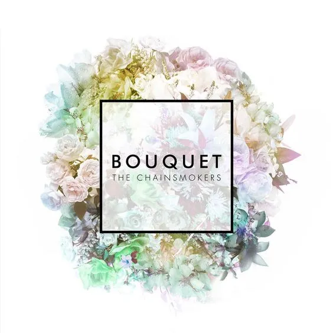

Bouquet
Bouquet is the debut extended play (EP) by American DJ duo The Chainsmokers. It was released on October 23, 2015, through Disruptor Records and Columbia Records
Bouquet is the debut extended play (EP) by American DJ duo The Chainsmokers. It was released on October 23, 2015, through Disruptor Records and Columbia Records